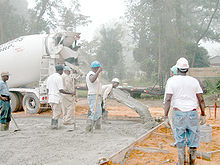

Productos
Cemento
Cemento de gran finura, desarrolla resistencias garantizando un adecuado programa de retiro de formaletas y puesta en funcionamiento de las estructuras, ofrece tiempos de fraguado controlados.

Acero de refuerzo
El acero de refuerzo, también llamado ferralla, es un importante material para la industria de la construcción utilizado para el refuerzo de estructuras y demás obras que requieran de este elemento, de conformidad con los diseños y detalles mostrados en los planos y especificaciones. Por su importancia en las edificaciones, debe estar comprobada y estudiada su calidad. Los productos de acero de refuerzo deben cumplir con ciertas normas que exigen sea verificada su resistencia, ductilidad, dimensiones, y límites físicos o químicos de la materia prima utilizada en su fabricación. La ferralla va, parte o en su totalidad, embebida en el hormigón.

Concretos
El hormigón o concreto convencional, normalmente usado en pavimentos, edificios y otras estructuras, tiene un peso específico (densidad, peso volumétrico, masa unitaria) que varía de 2200 hasta 2400 kg/m³ (137 hasta 150 libras/pie³). La densidad del concreto varía dependiendo de la cantidad y la densidad del agregado, la cantidad de aire atrapado (ocluido) o intencionalmente incluido y las cantidades de agua y cemento. Por otro lado, el tamaño máximo del agregado influye en las cantidades de agua y cemento. Al reducirse la cantidad de pasta (aumentándose la cantidad de agregado), se aumenta la densidad. En el diseño del concreto u hormigón armado (reforzado), el peso unitario de la combinación del concreto con la armadura normalmente se considera 2400 kg/m³ (150 lb/ft³).
